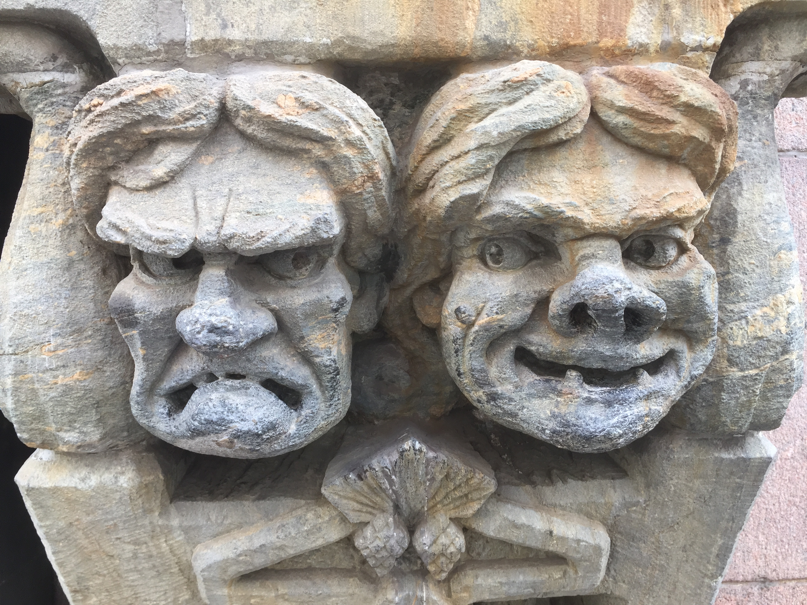

Our Trip to Estonia
This past summer my family and I went on a trip to Estonia for a Robotics Competition. It is one of the most beautiful places I have ever visited.
The Food

The food was absolutely delicious. Before the trip we were anxious about it, we really didn't know what to expect. But all our fears were totally unfounded.The food was amazing, and the desserts were even more! Fortunately they took Euros (€) so we could quickly decide if the food was cheaper or more expensive than at home and choose the restaurants accordingly.
Flowers Everywhere!
While Estonia is next to Russia, and hence, really cold most of the time, we visited during Summer, and the weather was beautiful all the time. But one of the things that captured our attention the most was the beautiful Flower markets that you could find everywhere. Where did all these flowers come from?
Funny Faces
Estonia has beautiful architecture, magnificent buildings and churches. But one of the things we enjoyed the most were the details that you could see all around the city, like these faces. Aren't they wild?